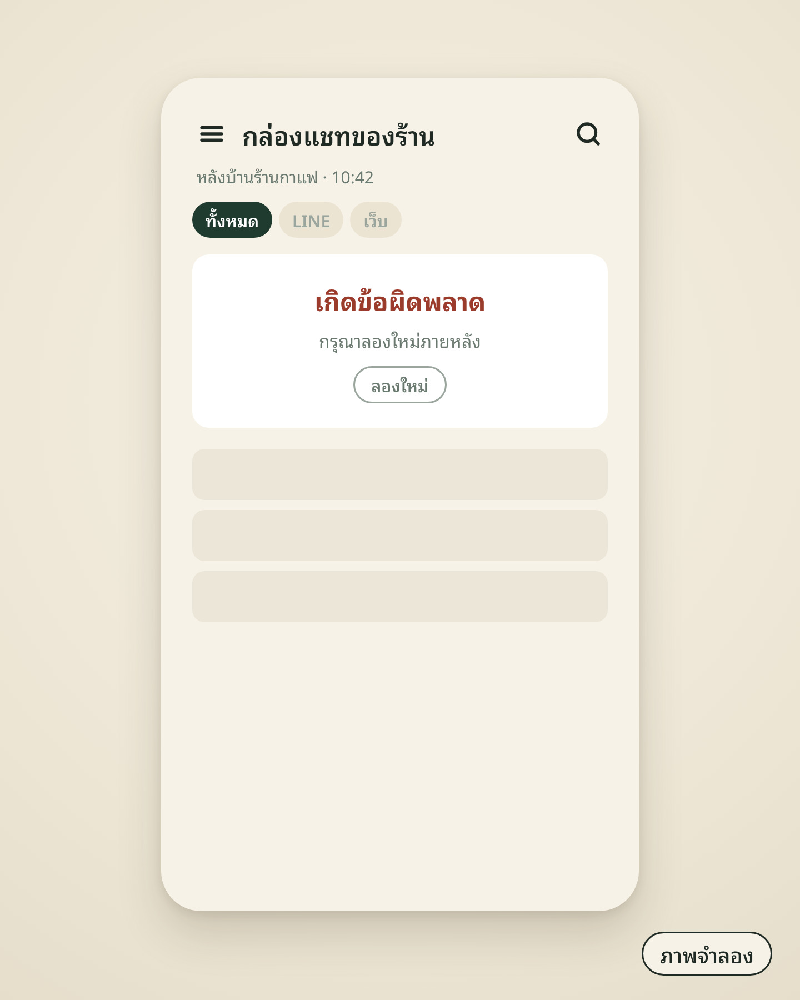
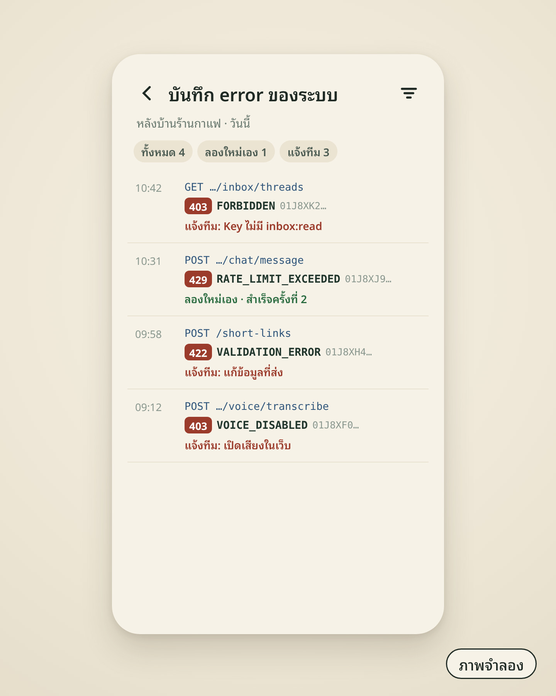
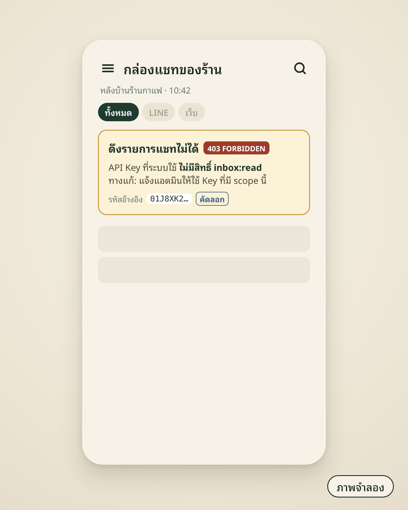

EP14 / ERRORS
ภาพจำลอง
1 อ่าน2 รับมือ3 ใช้ผล
เกิดข้อผิดพลาดแต่ไม่รู้ว่าเพราะอะไร

“เกิดข้อผิดพลาด” แค่นั้น
หน้าตาแบบไหน?
แปลว่าอะไร?
รับมือยังไง?
1อ่าน errorหน้าตาเดียวกันทุกตัว
HTTP 403error envelope
{ "status": "error",
"code": "FORBIDDEN", // กรณีไหน
"message": // ไทย
"คุณไม่มีสิทธิ์เข้าถึงข้อมูลนี้",
"คุณไม่มีสิทธิ์เข้าถึงข้อมูลนี้",
"message_en": // อังกฤษ
"You do not have permission…",
"You do not have permission…",
"request_id": "01J8XK2..." } // ประจำคำขอ
ค่าจากตัวอย่างในคู่มือ (message_en ตัดให้สั้น)
✓ เช็ก code
code === "FORBIDDEN"✕ แกะข้อความ
message มีคำว่า “สิทธิ์”2รับมือ401 · Key ใช้ไม่ได้
401403404422429Voice
401UNAUTHORIZED
Key ขาดหมดอายุถูกเพิกถอน
endpoint ที่ต้อง login ผ่านเว็บ
/me/api-tokens/inbox/reply
ทางแก้
เช็ก
Authorization: Bearer lmpat_…สร้าง Key ใหม่ที่ บัญชี → Personal API Key2รับมือ403 · สิทธิ์ไม่พอ
401403404422429Voice
403FORBIDDEN
ไม่มี scope ที่ endpoint ต้องการrole ไม่พอ
GETสิทธิ์ inbox:read
/api/agents/{id}/inbox/threads
Key มี: chat:invoke // ไม่พอ
ต้องใช้: inbox:read
ตัวอย่าง
ทางแก้
ใช้ Key ที่มี scope ตรงกับงาน
2รับมือ404 · 422 · คำขอผิด
401403404422429Voice
404NOT_FOUND
ไม่พบเป็นของบัญชีอื่น
422VALIDATION_ERROR
body / query ผิดรูปแบบ
ส่งซ้ำแบบเดิมได้ผลเดิม→ แก้คำขอก่อน
2รับมือ429 · ดู code ก่อนรอ
401403404422429Voice
429RATE_LIMIT_EXCEEDEDเรียกถี่เกินลิมิต
รอแล้วลองใหม่ลิมิตและโควตา ดูต่อใน EP15
429VOICE_QUOTA_EXCEEDEDโควตาเสียงไม่พอ → ดูยอดคงเหลือ ไม่ใช่แค่รอ
2รับมือcode เฉพาะของ Voice
401403404422429Voice
403VOICE_DISABLEDยังไม่เปิด “สนทนาด้วยเสียง” ในเวอร์ชันที่เผยแพร่
403VOICE_NOT_IN_PLANแพ็กเกจของเจ้าของ agent ไม่รวมงานเสียง
400NO_CREDENTIALโมเดลของ agent ยังไม่มี API key
422VOICE_AUDIO_FORMAT_UNSUPPORTEDอ่านไฟล์เสียงไม่ได้ → แปลงเป็น WAV แล้วส่งใหม่
รายละเอียด Voice API ดู EP04
2รับมือจำเป็น 3 กลุ่ม
1 · รอแล้วลองใหม่ได้
429RATE_LIMIT_EXCEEDED
2 · แก้คำขอก่อน
401UNAUTHORIZED403FORBIDDEN404NOT_FOUND422VALIDATION_ERROR422VOICE_AUDIO_FORMAT_UNSUPPORTED
3 · ตั้งค่าในเว็บ / ดูแพ็กเกจ
403VOICE_DISABLED400NO_CREDENTIAL403VOICE_NOT_IN_PLAN429VOICE_QUOTA_EXCEEDED
การแบ่งกลุ่มเป็นแนวทางของคลิป สรุปจากความหมายในคู่มือ
3ใช้ผลระบบหลังบ้านของร้าน


status + codeแยกว่าเป็นกรณีไหนrequest_idเก็บไว้ไล่ดูภายหลังRATE_LIMIT_EXCEEDEDระบบลองใหม่เองcode อื่นแจ้งทีม + ทางแก้code → ข้อความบอกทางแก้บนหน้าจอrequest_idปุ่มคัดลอกรหัสอ้างอิงสรุปอ่าน → รับมือ → ใช้ผล
1อ่าน
ดูที่ codeเก็บ request_id
2รับมือ
รอแล้วลองใหม่แก้คำขอตั้งค่าในเว็บ
3ใช้ผล
logลองใหม่อัตโนมัติบอกทางแก้

สนับสนุนโดย
langmind.in.th
Errorscoderequest_id
ระบบหลังบ้านเรียก API ทุกวัน
วันหนึ่งขึ้นแค่ว่า “เกิดข้อผิดพลาด”
วันหนึ่งขึ้นแค่ว่า “เกิดข้อผิดพลาด”
error หน้าตาแบบไหน แปลว่าอะไร
และควรรับมือยังไง
และควรรับมือยังไง
ทุก error หน้าตาเดียวกัน
code บอกว่าเป็นกรณีไหน
code บอกว่าเป็นกรณีไหน
message ไทย · message_en อังกฤษ
และ request_id ประจำคำขอ
และ request_id ประจำคำขอ
เช็กที่ code เสมอ
ไม่ต้องแกะข้อความ
ไม่ต้องแกะข้อความ
401 UNAUTHORIZED: Key ขาด หมดอายุ
ถูกเพิกถอน หรือ endpoint ที่ต้อง login เว็บ
ถูกเพิกถอน หรือ endpoint ที่ต้อง login เว็บ
ทางแก้: เช็ก Authorization: Bearer
หรือสร้าง Key ใหม่ที่หน้า Personal API Key
หรือสร้าง Key ใหม่ที่หน้า Personal API Key
403 FORBIDDEN: ไม่มี scope / role ไม่พอ
เช่น เรียก Inbox ด้วย Key ที่ไม่มี inbox:read
เช่น เรียก Inbox ด้วย Key ที่ไม่มี inbox:read
ทางแก้: ใช้ Key ที่มี scope
ตรงกับงาน
ตรงกับงาน
404 NOT_FOUND: ไม่พบ / ของบัญชีอื่น
422 VALIDATION_ERROR: รูปแบบผิด
422 VALIDATION_ERROR: รูปแบบผิด
ส่งซ้ำแบบเดิมก็ได้ผลเดิม
ต้องแก้คำขอก่อน
ต้องแก้คำขอก่อน
429 RATE_LIMIT_EXCEEDED: เรียกถี่เกินลิมิต
รอแล้วลองใหม่ (ลิมิตดูต่อใน EP15)
รอแล้วลองใหม่ (ลิมิตดูต่อใน EP15)
429 VOICE_QUOTA_EXCEEDED: เสียงไม่พอ
ดูยอดคงเหลือ ไม่ใช่แค่รอ
ดูยอดคงเหลือ ไม่ใช่แค่รอ
VOICE_DISABLED: ยังไม่เปิดเสียง
VOICE_NOT_IN_PLAN: แพ็กเกจไม่รวมงานเสียง
VOICE_NOT_IN_PLAN: แพ็กเกจไม่รวมงานเสียง
NO_CREDENTIAL: โมเดลยังไม่มี API key
FORMAT_UNSUPPORTED: แปลงเป็น WAV
FORMAT_UNSUPPORTED: แปลงเป็น WAV
3 กลุ่ม: รอแล้วลองใหม่ได้
RATE_LIMIT_EXCEEDED
RATE_LIMIT_EXCEEDED
แก้คำขอก่อน
401 · 403 · 404 · 422 · ไฟล์เสียงผิดรูปแบบ
401 · 403 · 404 · 422 · ไฟล์เสียงผิดรูปแบบ
ที่เหลือของ Voice
ตั้งค่าในเว็บ / ดูแพ็กเกจ
ตั้งค่าในเว็บ / ดูแพ็กเกจ
บันทึก status, code, request_id ใน log
ลองใหม่ได้ → ระบบลองเอง · ที่เหลือ → แจ้งทีม
ลองใหม่ได้ → ระบบลองเอง · ที่เหลือ → แจ้งทีม
หน้าจอของทีมบอกทางแก้
แทน “เกิดข้อผิดพลาด” เฉย ๆ
แทน “เกิดข้อผิดพลาด” เฉย ๆ
สรุป: อ่านจาก code · เก็บ request_id
รับมือตาม 3 กลุ่ม
รับมือตาม 3 กลุ่ม
คลิปนี้สนับสนุนโดย LangMind
เริ่มเชื่อม API ได้ที่
langmind.in.th
langmind.in.th